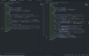
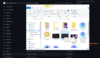

ファイルを作ってみよう
今回は、「ファイル」の作り方についてです！
この「ファイル」の作り方は二つあります。
- 「テキストエディタ」で作ったファイルをGithubにアップロードする(私はこっち)
- Githubにある、Create new file から作っていく
という作り方です！
しかし、個人的には、自分が使い慣れているテキストエディタなどで作っていくのがおすすめです！(VScode便利)
テキストエディタで作ったファイルをアップロードする
こっちの方が手っ取り早いのかな？まず、

こういうように作っていって、

こういうようにエクスプローラーからファイルをドラッグして、下の方にあるCommit changesってところ押したら、完了。
Githubのテキストエディタで作る
上の方に「name your file」って書いてるからそこにファイル名付けて、入力していって…って感じ
入力補助機能付いてないからやっぱりVScodeで。（あくまでも個人の意見です(ﾟ∀ﾟ)）
こういう風に、Githubのリポジトリの中でのファイルは作られていきます。
今回はこれで終わります！次回は「HTMLの基本:1」です！
(ﾟ∀ﾟ)ﾏﾀﾈ
ホームに戻る
目次へ戻る